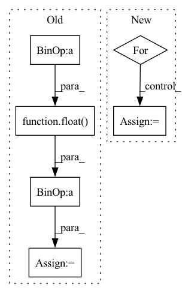

Pattern ID :39918

Before Change
def adjust_learning_rate(epoch, batch_idx):
if epoch < args.warmup_epochs:
epoch += float(batch_idx + 1) / len(train_loader)
lr_adj = 1. / hvd.size() * (epoch * (hvd.size() - 1) /
args.warmup_epochs + 1)
elif epoch < 60: /ኄ: /ኘ:
After Change
lr_adj = 1. / hvd.size() * (epoch * (hvd.size() - 1) / args.warmup_epochs + 1)
else:
lr_adj = 1.
for e in args.lr_decay:
if epoch > e:
lr_adj *= 0.1
for param_group in optimizer.param_groups:
param_group["lr"] = args.lr * hvd.size() * lr_adj
In pattern: SUPERPATTERN
Frequency: 3
Non-data size: 6
Instances
Fragment ID: 113443843
Project Name: gpauloski/kfac_pytorch
Commit Name: cbda6c06839e29ad0ac4680cc491afc25e0514cb
Time: 2020-02-23
Author: gpauloski@yahoo.com
File Name: examples/pytorch_cifar10_resnet.py
M Class Name: AnonimousClass
N Class Name: AnonimousClass
M Method Name: adjust_learning_rate(1)
N Method Name: adjust_learning_rate(2)
M Parent Class:
N Parent Class:
M File Name: examples/pytorch_cifar10_resnet.py
N File Name: examples/pytorch_cifar10_resnet.py
M Start Line: 204
M End Line: 218
N Start Line: 225
N End Line: 230
'>
Before Change
mask_flag = torch.nn.functional.max_pool2d(one_zero_m, (self.block_size, self.block_size), stride=1, padding=1)
mask = 1.0 - mask_flag
elem_numel = input_shape[0] * input_shape[1] * input_shape[2] * input_shape[3]
elem_numel_m = float(elem_numel)
elem_sum = mask.sum()
output = input * mask * elem_numel_m / elem_sum
return output
After Change
shape = x.shape[2:]
else:
shape = x.shape[1:3]
for s in shape:
gamma *= s / (s - self.block_size + 1)
matrix = torch.rand(x.shape, device=x.device)
matrix = (matrix < gamma).float()
'>
Fragment ID: 113443875
Project Name: miemie2013/miemiedetection
Commit Name: aabe1f2d364493c30179de6cf7d5c2d0c6ee7258
Time: 2021-12-30
Author: 53960695+miemie2013@users.noreply.github.com
File Name: mmdet/models/custom_layers.py
M Class Name: DropBlock
N Class Name: DropBlock
M Method Name: forward(2)
N Method Name: forward(2)
M Parent Class: torch.nn.Module
N Parent Class: torch.nn.Module
M File Name: mmdet/models/custom_layers.py
N File Name: mmdet/models/custom_layers.py
M Start Line: 538
M End Line: 576
N Start Line: 724
N End Line: 745
'>
Before Change
def adjust_learning_rate(epoch, batch_idx):
if epoch < args.warmup_epochs:
epoch += float(batch_idx + 1) / len(train_loader)
lr_adj = 1. / hvd.size() * (epoch * (hvd.size() - 1) /
args.warmup_epochs + 1)
elif epoch < 60: /ኄ: /ኘ:
After Change
lr_adj = 1. / hvd.size() * (epoch * (hvd.size() - 1) / args.warmup_epochs + 1)
else:
lr_adj = 1.
for e in args.lr_decay:
if epoch > e:
lr_adj *= 0.1
for param_group in optimizer.param_groups:
param_group["lr"] = args.lr * hvd.size() * lr_adj
'>
Fragment ID: 113443893
Project Name: gpauloski/kfac-pytorch
Commit Name: cbda6c06839e29ad0ac4680cc491afc25e0514cb
Time: 2020-02-23
Author: gpauloski@yahoo.com
File Name: examples/pytorch_cifar10_resnet.py
M Class Name: AnonimousClass
N Class Name: AnonimousClass
M Method Name: adjust_learning_rate(1)
N Method Name: adjust_learning_rate(2)
M Parent Class:
N Parent Class:
M File Name: examples/pytorch_cifar10_resnet.py
N File Name: examples/pytorch_cifar10_resnet.py
M Start Line: 204
M End Line: 218
N Start Line: 225
N End Line: 230